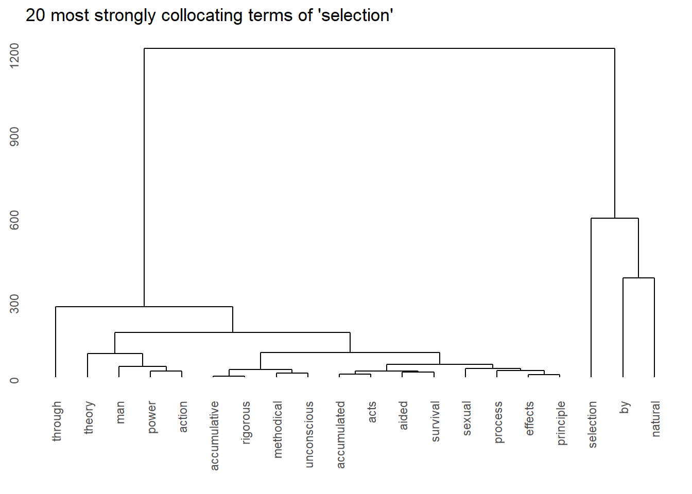
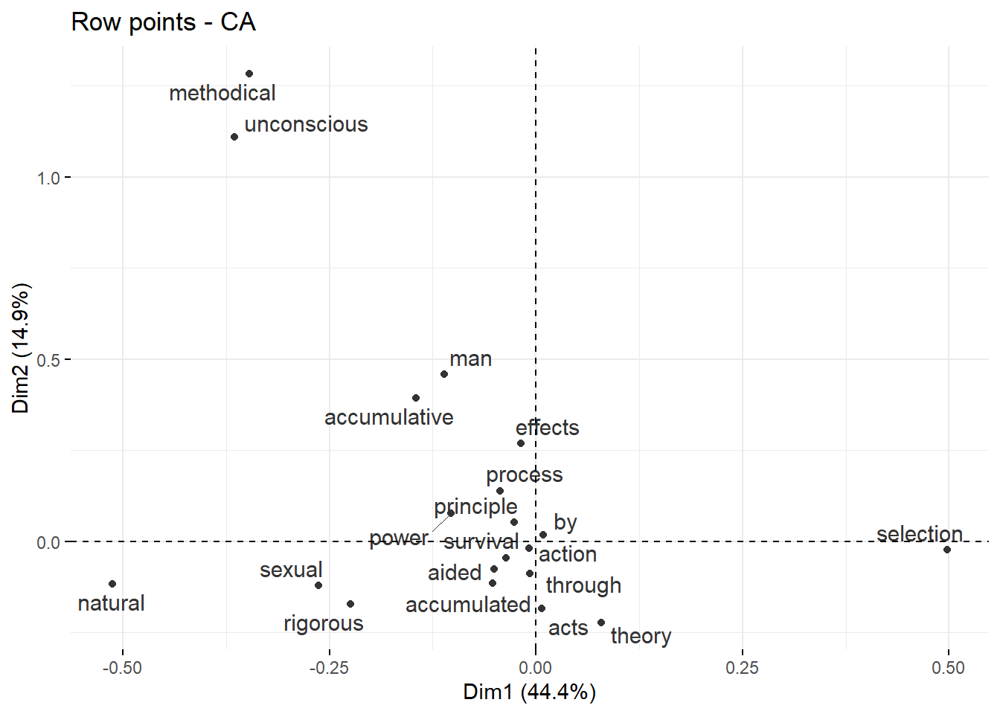

Analyzing Collocations and N-grams in R
Martin Schweinberger
2024-03-07

Introduction
This tutorial introduces collocation and co-occurrence analysis with R and shows how to extract and visualize semantic links between words.1

This tutorial is aimed at beginners and intermediate users of R with the aim of showcasing how to extract and analyze collocations and N-grams from textual data using R. The aim is not to provide a fully-fledged analysis but rather to show and exemplify selected useful methods associated with collocation analysis.
To be able to follow this tutorial, we suggest you check out and
familiarize yourself with the content of the following R
Basics tutorials:
- Getting started with R
- Loading, saving, and generating data in R
- String Processing in R
- Regular Expressions in R
Click here2 to
download the entire R Notebook for this
tutorial.

Click
here
to open a Jupyter notebook that allows you to follow this tutorial
interactively. This means that you can execute, change, and edit the
code used in this tutorial to help you better understand how the code
shown here works (make sure you run all code chunks in the order in
which they appear - otherwise you will get an error).
LADAL TOOL
Click on this  badge to
open an notebook-based tool
badge to
open an notebook-based tool
that calculates association
measures and allows you to download the results.
How can you determine if words occur more frequently together than
would be expected by chance?
This tutorial aims to show how you can answer this question.
So, how would you find words that are associated with a specific term and how can you visualize such word nets? This tutorial focuses on co-occurrence and collocations of words. Collocations are words that occur very frequently together. For example, Merry Christmas is a collocation because merry and Christmas occur more frequently together than would be expected by chance. This means that if you were to shuffle all words in a corpus and would then test the frequency of how often merry and Christmas co-occurred, they would occur significantly less often in the shuffled or randomized corpus than in a corpus that contain non-shuffled natural speech.
Co-occurrence and association
Collocations are combinations of words that frequently co-occur in a language, appearing together more often than would be expected by chance.
LADAL TOOL
Click on this  badge to
open an notebook-based tool
badge to
open an notebook-based tool
that calculates association measures and
allows you to download the results.
We need to differentiate between
collocations: words that are significantly attracted to one another and often occur together (but are not necessarily adjacent) such as black and coffee
n-grams: combinations of words that are adjacent as the bi-grams This is, is a, and a sentence that form the sentence This is a sentence
Such word pairings or groupings exhibit a certain degree of naturalness and tend to form recurring patterns. They play a crucial role in language acquisition, learning, fluency, and usage and they contribute to the natural and idiomatic expression of ideas. A typical example of a collocation is Merry Christmas because the words merry and Christmas occur together more frequently together than would be expected, if words were just randomly stringed together. Other examples of collocations include strong coffee, make a decision, or take a risk. Recognizing and understanding collocations is essential for language learners, as it enhances their ability to produce authentic and contextually appropriate language.
Identifying words pairs (w1 and w2) that collocate (i.e. collocations) and determining their association strength (a measure of how strongly attracted words are to each other) is based on the co-occurrence frequencies of word pairs in a contingency table (see below, O is short for observed frequency).
| w2 present | w2 absent | ||
|---|---|---|---|
| w1 present | O11 | O12 | = R1 |
| w1 absent | O21 | O22 | = R2 |
| = C1 | = C2 | = N |
From this contingency table, we can calculate the frequencies that would be expected if the words did not show any attraction or repulsion (see below, E is short for expected frequency).
| w2 present | w2 absent | ||
|---|---|---|---|
| w1 present | E11 = (R1 * C1) / (N) | E12 = (R1 * C2) / (N) | = R1 |
| w1 absent | E21 = (R2 * C1) / (N) | E22 = (R2 * C2) / (N) | = R2 |
| = C1 | = C2 | = N |
Association measures use the frequency information in the above contingency tables to evaluate the strength of attraction or repulsion between words. As such, association measures are statistical metrics used to quantify the strength and significance of the relationship between words within a collocation. These measures help assess how likely it is for two words to appear together more frequently than expected by chance. Several association measures are commonly used in collocation analysis, including:
Gries’ AM: Gries’ AM (Gries 2022) is probably the best association measure that is on conditional probabilities. For information on how it is calculated, see Gries (2022). In contrast to other association measures, it has three main advantages:
it takes into account that the association between word_1 and word_2 is not symmetric (word_1 may be more strongly attracted with word_2 than vice verse) - in sense it is very similar to ΔP
it is not affected by frequency as other association measures (which is a serious issue as association measures should reflect association strength and not frequency).
it is normalized as it takes into account that the possible range of values differs across elements (some words can have very high values while others cannot)
delta P (ΔP): ΔP (Ellis 2007; Gries 2013) is an association measure based on conditional probabilities that is implied in MS (Gries 2013, 141). ΔP has two advantages: it takes into account that the association between word_1 and word_2 is not symmetric (word_1 may be more strongly attracted with word_2 than vice verse) and it is not affected by frequency as other association measures (which is a serious issue as association measures should reflect association strength and not frequency) (see Gries 2022).
\[ \Delta P_1 = P(w_1 | w_2) = \left( \frac{O11}{R1} \right)- \left(\frac{O21} {R2} \right) \]
\[ \Delta P_2 = P(w_2 | w_1) = \left( \frac{O11}{C1} \right) -\left( \frac{O21}{C2} \right) \]
- Pointwise Mutual Information (PMI): PMI measures the likelihood of two words occurring together compared to their individual likelihoods of occurring separately. A higher PMI score suggests a stronger association.
\[ \text{PMI}(w_1, w_2) = \log_2 \left( \frac{P(w_1 \cap w_2)}{P(w_1) \cdot P(w_2)} \right) \]
- Log-Likelihood Ratio (LLR): LLR compares the likelihood of the observed word combination occurring with the expected likelihood based on the individual frequencies of the words. Higher LLR values indicate a more significant association (where \(O_i\) is the observed frequency and \(E_i\) is the expected frequency for each combination).
\[ \text{LLR}(w_1, w_2) = 2 \sum_{i=1}^4 \frac{(O_i - E_i)^2}{E_i} \]
- Dice Coefficient: This measure considers the co-occurrence of words and calculates the ratio of the overlap between the two words to the sum of their individual frequencies. The Dice coefficient ranges from 0 to 1, with higher values indicating stronger association.
\[ \text{Dice}(w_1, w_2) = \frac{2 \times \text{freq}(w_1 \cap w_2)}{\text{freq}(w_1) + \text{freq}(w_2)} \]
- Chi-Square: Chi-square measures the difference between the observed and expected frequencies of word co-occurrence. A higher chi-square value signifies a more significant association (where \(O_i\) is the observed frequency and \(E_i\) is the expected frequency for each combination).
\[ \chi^2(w_1, w_2) = \sum \frac{(O_i - E_i)^2}{E_i} \]
- t-Score: The t-score is based on the difference between the observed and expected frequencies, normalized by the standard deviation. Higher T-scores indicate a stronger association.
\[ \text{t-Score}(w_1, w_2) = \frac{\text{freq}(w_1 \cap w_2) - \text{expected\_freq}(w_1 \cap w_2)}{\sqrt{\text{freq}(w_1 \cap w_2)}} \]
- Mutual Information (MI): MI measures the reduction in uncertainty about one word’s occurrence based on the knowledge of another word’s occurrence. Higher MI values indicate a stronger association (where \(P(w_1 \cap w_2)\) is the joint probability, and \(P(w_1)\) and \(P(w_2)\) are the individual probabilities).
\[ \text{MI}(w_1, w_2) = \log_2 \left( \frac{P(w_1 \cap w_2)}{P(w_1) \cdot P(w_2)} \right) \]
- Minimum Sensitivity (MS): The minimum sensitivity is 1 when W1 and W2 always occur together and never apart. It is 0 when W1 and W2 never occur together. A higher minimum sensitivity indicates a stronger dependence between the two words in a bigram (Pedersen 1998).
\[ \text{MS} = min\left( P(w_1 | w_2) , P(w_2 | w_1) \right) \]
These association measures help researchers and language analysts identify meaningful and statistically significant collocations, assisting in the extraction of relevant information from corpora and improving the accuracy of collocation analysis in linguistic studies.
Preparation and session set up
This tutorial is based on R. If you have not installed R or are new to it, you will find an introduction to and more information how to use R here. For this tutorials, we need to install certain packages from an R library so that the scripts shown below are executed without errors. Before turning to the code below, please install the packages by running the code below this paragraph. If you have already installed the packages mentioned below, then you can skip ahead and ignore this section. To install the necessary packages, simply run the following code - it may take some time (between 1 and 5 minutes to install all of the libraries so you do not need to worry if it takes some time).
# set options
options(stringsAsFactors = F)
options(scipen = 999)
options(max.print=1000)
# install packages
install.packages("FactoMineR")
install.packages("factoextra")
install.packages("flextable")
install.packages("GGally")
install.packages("ggdendro")
install.packages("igraph")
install.packages("network")
install.packages("Matrix")
install.packages("quanteda")
install.packages("quanteda.textstats")
install.packages("quanteda.textplots")
install.packages("dplyr")
install.packages("stringr")
install.packages("tm")
install.packages("sna")
install.packages("tidytext")
# install klippy for copy-to-clipboard button in code chunks
install.packages("remotes")
remotes::install_github("rlesur/klippy")Next, we load the packages.
# load packages
library(FactoMineR)
library(factoextra)
library(flextable)
library(GGally)
library(ggdendro)
library(igraph)
library(network)
library(Matrix)
library(quanteda)
library(quanteda.textstats)
library(quanteda.textplots)
library(dplyr)
library(stringr)
library(tm)
library(sna)
# activate klippy for copy-to-clipboard button
klippy::klippy()We will use the Charles Darwin’s On the Origin of Species by Means of Natural Selection as a data source and begin by generating a bi-gram list. As a first step, we load the data and split it into individual words.
# read in text
text <- base::readRDS(url("https://slcladal.github.io/data/cdo.rda", "rb")) %>%
paste0(collapse = " ") %>%
stringr::str_squish() %>%
stringr::str_remove_all("- "). |
|---|
THE ORIGIN OF SPECIES BY CHARLES DARWIN AN HISTORICAL SKETCH OF THE PROGRESS OF OPINION ON THE ORIGIN OF SPECIES INTRODUCTION When on board H.M.S. 'Beagle,' as naturalist, I was much struck with certa |
Once you have installed R, RStudio, and once you have initiated the session by executing the code shown above, you are good to go.
Collocations
As collocates do not have to be immediately adjacent but can be separated by several slots, their retrieval is substantially more difficult compared with n-grams. Nonetheless, there are various ways of finding collocations depending on the data provided, the context, and the association measure (which represents information of how strong the association between the words is). Below, you will see how to detect collocations in two different data structures:
a list of sentences
concordances
In the following, we will extract collocations from the sentences in Charles Darwin’s On the Origin of Species by Means of Natural Selection
Identifying collocations in sentences
Data preparation
In a first step, we split our example text into sentences and clean the data (removing punctuation, converting to lower case, etc.).
text %>%
# concatenate the elements in the 'text' object
paste0(collapse = " ") %>%
# separate possessives and contractions
stringr::str_replace_all(fixed("'"), fixed(" '")) %>%
stringr::str_replace_all(fixed("’"), fixed(" '")) %>%
# split text into sentences
tokenizers::tokenize_sentences() %>%
# unlist sentences
unlist() %>%
# remove non-word characters
stringr::str_replace_all("\\W", " ") %>%
stringr::str_replace_all("[^[:alnum:] ]", " ") %>%
# remove superfluous white spaces
stringr::str_squish() %>%
# convert to lower case and save in 'sentences' object
tolower() -> sentences. |
|---|
the origin of species by charles darwin an historical sketch of the progress of opinion on the origin of species introduction when on board h m s |
beagle as naturalist i was much struck with certain facts in the distribution of the organic beings inhabiting south america and in the geological relations of the present to the past inhabitants of that continent |
these facts as will be seen in the latter chapters of this volume seemed to throw some light on the origin of species that mystery of mysteries as it has been called by one of our greatest philosophers |
on my return home it occurred to me in 1837 that something might perhaps be made out on this question by patiently accumulating and reflecting on all sorts of facts which could possibly have any bearing on it |
after five years work i allowed myself to speculate on the subject and drew up some short notes these i enlarged in 1844 into a sketch of the conclusions which then seemed to me probable from that period to the present day i have steadily pursued the same object |
i hope that i may be excused for entering on these personal details as i give them to show that i have not been hasty in coming to a decision |
my work is now 1859 nearly finished but as it will take me many more years to complete it and as my health is far from strong i have been urged to publish this abstract |
i have more especially been induced to do this as mr |
wallace who is now studying the natural history of the malay archipelago has arrived at almost exactly the same general conclusions that i have on the origin of species |
in 1858 he sent me a memoir on this subject with a request that i would forward it to sir charles lyell who sent it to the linnean society and it is published in the third volume of the journal of that society |
Next, we tabulate the data and reformat it so that we have the relevant information to calculate the association statistics (word 1 and word 2 as well as O11, O12, O21, and O22).
# tokenize the 'sentences' data using quanteda package
sentences %>%
quanteda::tokens() %>%
# create a document-feature matrix (dfm) using quanteda
quanteda::dfm() %>%
# create a feature co-occurrence matrix (fcm) without considering trigrams
quanteda::fcm(tri = FALSE) %>%
# tidy the data using tidytext package
tidytext::tidy() %>%
# rearrange columns for better readability
dplyr::relocate(term, document, count) %>%
# rename columns for better interpretation
dplyr::rename(w1 = 1,
w2 = 2,
O11 = 3) -> coll_basicw1 | w2 | O11 |
|---|---|---|
the | the | 24,287 |
the | origin | 170 |
the | of | 37,291 |
the | species | 6,222 |
the | by | 5,415 |
the | charles | 28 |
the | darwin | 11 |
the | an | 2,049 |
the | historical | 7 |
the | sketch | 8 |
We now enhance our table by calculating all observed frequencies (O11, O12, O21, O22) as well as row totals (R1, R2), column totals (C1, C2), and the overall total (N).
# calculate the total number of observations (N)
coll_basic %>% dplyr::mutate(N = sum(O11)) %>%
# calculate R1, O12, and R2
dplyr::group_by(w1) %>%
dplyr::mutate(R1 = sum(O11),
O12 = R1 - O11,
R2 = N - R1) %>%
dplyr::ungroup(w1) %>%
# calculate C1, O21, C2, and O22
dplyr::group_by(w2) %>%
dplyr::mutate(C1 = sum(O11),
O21 = C1 - O11,
C2 = N - C1,
O22 = R2 - O21) -> colldfw1 | w2 | O11 | N | R1 | O12 | R2 | C1 | O21 | C2 | O22 |
|---|---|---|---|---|---|---|---|---|---|---|
the | the | 24,287 | 9,405,996 | 643,895 | 619,608 | 8,762,101 | 643,895 | 619,608 | 8,762,101 | 8,142,493 |
the | origin | 170 | 9,405,996 | 643,895 | 643,725 | 8,762,101 | 2,884 | 2,714 | 9,403,112 | 8,759,387 |
the | of | 37,291 | 9,405,996 | 643,895 | 606,604 | 8,762,101 | 450,460 | 413,169 | 8,955,536 | 8,348,932 |
the | species | 6,222 | 9,405,996 | 643,895 | 637,673 | 8,762,101 | 89,994 | 83,772 | 9,316,002 | 8,678,329 |
the | by | 5,415 | 9,405,996 | 643,895 | 638,480 | 8,762,101 | 80,785 | 75,370 | 9,325,211 | 8,686,731 |
the | charles | 28 | 9,405,996 | 643,895 | 643,867 | 8,762,101 | 451 | 423 | 9,405,545 | 8,761,678 |
the | darwin | 11 | 9,405,996 | 643,895 | 643,884 | 8,762,101 | 179 | 168 | 9,405,817 | 8,761,933 |
the | an | 2,049 | 9,405,996 | 643,895 | 641,846 | 8,762,101 | 33,809 | 31,760 | 9,372,187 | 8,730,341 |
the | historical | 7 | 9,405,996 | 643,895 | 643,888 | 8,762,101 | 185 | 178 | 9,405,811 | 8,761,923 |
the | sketch | 8 | 9,405,996 | 643,895 | 643,887 | 8,762,101 | 152 | 144 | 9,405,844 | 8,761,957 |
To determine which terms collocate significantly and with what association strength, we use the following information (that is provided by the table above):
O11 = Number of times word1 occurs with word2
O12 = Number of times word1 occurs without word2
O21 = Number of times
CoocTermoccurs withoutTermO22 = Number of terms that are not
coocTermorTerm
Example:
| w2 present | w2 absent | ||
|---|---|---|---|
| w1 present | O11 | O12 | = R1 |
| w1 absent | O21 | O22 | = R2 |
| = C1 | = C2 | = N |
We could calculate all collocations in the corpus (based on co-occurrence within the same sentence) or we can find collocations of a specific term - here, we will find collocations fo the term selection.
Now that we have all the relevant information, we will reduce the data and add additional information to the data so that the computing of the association measures runs smoothly.
# reduce and complement data
colldf %>%
# determine Term
dplyr::filter(w1 == "selection",
# set minimum number of occurrences of w2
(O11+O21) > 10,
# set minimum number of co-occurrences of w1 and w2
O11 > 5) %>%
dplyr::rowwise() %>%
dplyr::mutate(E11 = R1 * C1 / N,
E12 = R1 * C2 / N,
E21 = R2 * C1 / N,
E22 = R2 * C2 / N) -> colldf_reduxw1 | w2 | O11 | N | R1 | O12 | R2 | C1 | O21 | C2 | O22 | E11 | E12 | E21 | E22 |
|---|---|---|---|---|---|---|---|---|---|---|---|---|---|---|
selection | the | 1,783 | 9,405,996 | 26,793 | 25,010 | 9,379,203 | 643,895 | 642,112 | 8,762,101 | 8,737,091 | 1,834.13630 | 24,958.86 | 642,060.864 | 8,737,142 |
selection | origin | 19 | 9,405,996 | 26,793 | 26,774 | 9,379,203 | 2,884 | 2,865 | 9,403,112 | 9,376,338 | 8.21508 | 26,784.78 | 2,875.785 | 9,376,327 |
selection | of | 1,556 | 9,405,996 | 26,793 | 25,237 | 9,379,203 | 450,460 | 448,904 | 8,955,536 | 8,930,299 | 1,283.13629 | 25,509.86 | 449,176.864 | 8,930,026 |
selection | species | 175 | 9,405,996 | 26,793 | 26,618 | 9,379,203 | 89,994 | 89,819 | 9,316,002 | 9,289,384 | 256.34810 | 26,536.65 | 89,737.652 | 9,289,465 |
selection | by | 334 | 9,405,996 | 26,793 | 26,459 | 9,379,203 | 80,785 | 80,451 | 9,325,211 | 9,298,752 | 230.11625 | 26,562.88 | 80,554.884 | 9,298,648 |
selection | an | 90 | 9,405,996 | 26,793 | 26,703 | 9,379,203 | 33,809 | 33,719 | 9,372,187 | 9,345,484 | 96.30501 | 26,696.69 | 33,712.695 | 9,345,490 |
selection | on | 200 | 9,405,996 | 26,793 | 26,593 | 9,379,203 | 71,209 | 71,009 | 9,334,787 | 9,308,194 | 202.83899 | 26,590.16 | 71,006.161 | 9,308,197 |
selection | when | 63 | 9,405,996 | 26,793 | 26,730 | 9,379,203 | 26,607 | 26,544 | 9,379,389 | 9,352,659 | 75.79010 | 26,717.21 | 26,531.210 | 9,352,672 |
selection | s | 38 | 9,405,996 | 26,793 | 26,755 | 9,379,203 | 5,975 | 5,937 | 9,400,021 | 9,373,266 | 17.01980 | 26,775.98 | 5,957.980 | 9,373,245 |
selection | as | 296 | 9,405,996 | 26,793 | 26,497 | 9,379,203 | 103,198 | 102,902 | 9,302,798 | 9,276,301 | 293.95973 | 26,499.04 | 102,904.040 | 9,276,299 |
Now we can calculate the collocation statistics (the association strength).
colldf_redux %>%
# determine number of rows
dplyr::mutate(Rws = nrow(.)) %>%
# work row-wise
dplyr::rowwise() %>%
# calculate fishers' exact test
dplyr::mutate(p = as.vector(unlist(fisher.test(matrix(c(O11, O12, O21, O22),
ncol = 2, byrow = T))[1]))) %>%
# extract AM
# 1. bias towards top left
dplyr::mutate(btl_O12 = ifelse(C1 > R1, 0, R1-C1),
btl_O11 = ifelse(C1 > R1, R1, R1-btl_O12),
btl_O21 = ifelse(C1 > R1, C1-R1, C1-btl_O11),
btl_O22 = ifelse(C1 > R1, C2, C2-btl_O12),
# 2. bias towards top right
btr_O11 = 0,
btr_O21 = R1,
btr_O12 = C1,
btr_O22 = C2-R1) %>%
# 3. calculate AM
dplyr::mutate(upp = btl_O11/R1,
low = btr_O11/R1,
op = O11/R1) %>%
dplyr::mutate(AM = op / upp) %>%
# remove superfluous columns
dplyr::select(-any_of(c("btr_O21", "btr_O12", "btr_O22", "btl_O12",
"btl_O11", "btl_O21", "btl_O22", "btr_O11"))) %>%
# extract x2 statistics
dplyr::mutate(X2 = (O11-E11)^2/E11 + (O12-E12)^2/E12 + (O21-E21)^2/E21 + (O22-E22)^2/E22) %>%
# extract association measures
dplyr::mutate(phi = sqrt((X2 / N)),
Dice = (2 * O11) / (R1 + C1),
LogDice = log((2 * O11) / (R1 + C1)),
MI = log2(O11 / E11),
MS = min((O11/C1), (O11/R1)),
t.score = (O11 - E11) / sqrt(O11),
z.score = (O11 - E11) / sqrt(E11),
PMI = log2( (O11 / N) / ( C1 / N * R1 / N )),
DeltaP12 = (O11 / (O11 + O12)) - (O21 / (O21 + O22)),
DeltaP21 = (O11 / (O11 + O21)) - (O21 / (O12 + O22)),
DP = (O11 / R1) - (O21 / R2),
LogOddsRatio = log(((O11 + 0.5) * (O22 + 0.5)) / ( (O12 + 0.5) * (O21 + 0.5) )),
# calculate LL aka G2
G2 = 2 * (O11 * log(O11 / E11) + O12 * log(O12 / E12) + O21 * log(O21 / E21) + O22 * log(O22 / E22))) %>%
# determine Bonferroni corrected significance
dplyr::mutate(Sig_corrected = dplyr::case_when(p / Rws > .05 ~ "n.s.",
p / Rws > .01 ~ "p < .05*",
p / Rws > .001 ~ "p < .01**",
p / Rws <= .001 ~ "p < .001***",
T ~ "N.A.")) %>%
# round p-value
dplyr::mutate(p = round(p, 5)) %>%
# filter out non significant results
dplyr::filter(Sig_corrected != "n.s.",
# filter out instances where the w1 and w2 repel each other
E11 < O11) %>%
# arrange by DeltaP12 (association measure)
dplyr::arrange(-DeltaP12) %>%
# remove superfluous columns
dplyr::select(-any_of(c("TermCoocFreq", "AllFreq", "NRows", "O12", "O21",
"O22", "R1", "R2", "C1", "C2", "E11", "E12", "E21",
"E22", "upp", "low", "op", "Rws"))) -> assoc_tbw1 | w2 | O11 | N | p | AM | X2 | phi | Dice | LogDice | MI | MS | t.score | z.score | PMI | DeltaP12 | DeltaP21 | DP | LogOddsRatio | G2 | Sig_corrected |
|---|---|---|---|---|---|---|---|---|---|---|---|---|---|---|---|---|---|---|---|---|
selection | natural | 515 | 9,405,996 | 0.00000 | 0.020258841 | 2,720.22428 | 0.017005913 | 0.019726510 | -3.925792 | 2.8302762 | 0.019221438 | 19.502767 | 52.011007 | 2.8302762 | 0.016565989 | 0.017603780 | 0.016565989 | 1.9970932 | 1,150.64107 | p < .001*** |
selection | of | 1,556 | 9,405,996 | 0.00000 | 0.058074870 | 61.11824 | 0.002549077 | 0.006520650 | -5.032781 | 0.2781676 | 0.003454247 | 6.917370 | 7.617446 | 0.2781676 | 0.010213234 | -0.046671620 | 0.010213234 | 0.2045038 | 57.40403 | p < .001*** |
selection | to | 776 | 9,405,996 | 0.00000 | 0.028962789 | 38.30524 | 0.002018026 | 0.006317289 | -5.064465 | 0.3156998 | 0.003545289 | 5.474939 | 6.107969 | 0.3156998 | 0.005708574 | -0.020195137 | 0.005708574 | 0.2260098 | 35.59006 | p < .001*** |
selection | through | 149 | 9,405,996 | 0.00000 | 0.010922953 | 313.56297 | 0.005773777 | 0.007370035 | -4.910333 | 1.9390875 | 0.005561154 | 9.023314 | 17.669645 | 1.9390875 | 0.004122652 | 0.009486465 | 0.004122652 | 1.3596350 | 181.59628 | p < .001*** |
selection | by | 334 | 9,405,996 | 0.00000 | 0.012465943 | 47.43872 | 0.002245764 | 0.006209448 | -5.081683 | 0.5374853 | 0.004134431 | 5.684266 | 6.848161 | 0.5374853 | 0.003888348 | -0.004492827 | 0.003888348 | 0.3792474 | 41.64215 | p < .001*** |
selection | theory | 82 | 9,405,996 | 0.00000 | 0.011239035 | 180.97693 | 0.004386410 | 0.004810936 | -5.336864 | 1.9802428 | 0.003060501 | 6.760323 | 13.428382 | 1.9802428 | 0.002291352 | 0.010471482 | 0.002291352 | 1.3893366 | 103.32874 | p < .001*** |
selection | been | 233 | 9,405,996 | 0.00001 | 0.008696301 | 21.98381 | 0.001528794 | 0.005349312 | -5.230787 | 0.4393942 | 0.003862668 | 4.007740 | 4.666970 | 0.4393942 | 0.002289787 | -0.002566830 | 0.002289787 | 0.3100062 | 19.77955 | p < .001*** |
selection | variations | 77 | 9,405,996 | 0.00000 | 0.009361702 | 122.94955 | 0.003615439 | 0.004397738 | -5.426665 | 1.7165674 | 0.002873885 | 6.104990 | 11.067616 | 1.7165674 | 0.002005154 | 0.008494688 | 0.002005154 | 1.2047885 | 76.55053 | p < .001*** |
selection | will | 149 | 9,405,996 | 0.00000 | 0.005561154 | 28.38208 | 0.001737080 | 0.004904300 | -5.317643 | 0.6227757 | 0.004386223 | 4.279371 | 5.310275 | 0.6227757 | 0.001955197 | 0.000777505 | 0.001955197 | 0.4384993 | 24.34962 | p < .001*** |
selection | power | 63 | 9,405,996 | 0.00000 | 0.013188193 | 179.89260 | 0.004373250 | 0.003991131 | -5.523681 | 2.2109715 | 0.002351360 | 6.222896 | 13.389887 | 2.2109715 | 0.001848759 | 0.012686769 | 0.001848759 | 1.5525839 | 94.91857 | p < .001*** |
Identifying collocations using kwics
In this section, we will extract collocations and calculate association measures based on concordances and the corpus the concordances were extracted from.
We start by cleaning our corpus and splitting it into chapters.
# clean corpus
text %>%
# concatenate the elements in the 'text' object
paste0(collapse = " ") %>%
# separate possessives and contractions
stringr::str_replace_all(fixed("'"), fixed(" '")) %>%
stringr::str_replace_all(fixed("’"), fixed(" '")) %>%
# split text into different chapters
stringr::str_split("CHAPTER [IVX]{1,4}") %>%
# unlist sentences
unlist() %>%
# remove non-word characters
stringr::str_replace_all("\\W", " ") %>%
stringr::str_replace_all("[^[:alpha:] ]", " ") %>%
# remove superfluous white spaces
stringr::str_squish() %>%
# convert to lower case and save in 'sentences' object
tolower() -> texts. |
|---|
the origin of species by charles darwin an historical sketch of the progress of opinion on the origi |
variation under domestication causes of variability effects of habit and the use or disuse of partsc |
variation under nature variability individual differences doubtful species wide ranging much diffuse |
struggle for existence its bearing on natural selection the term used in a wide sense geometrical ra |
natural selection or the survival of the fittest natural selection its power compared with man s sel |
f under changing conditions of life organic beings present individual differences in almost every pa |
laws of variation effects of changed conditions use and disuse combined with natural selection organ |
difficulties of the theory difficulties of the theory of descent with modification absence or rarity |
miscellaneous objections to the theory of natural selection longevity modifications not necessarily |
instinct instincts comparable with habits but different in their origin instincts graduated aphides |
We split the corpus into chapter to mirror the fact that most text data will come in the form of corpora which consist of different files containing texts.
Next, we generate a frequency list of words that occur around a keyword (we use the keyword selection in this example but you can also choose a different word).
for this we use the tokens_select function (from the
quanteda package) which has the following arguments:
x: a text or collection of texts. The text needs to be tokenised, i.e. split it into individual words, which is why we use the text in thetokens()function.pattern: a keyword defined by a search pattern
window: the size of the context window (how many word before and after)
valuetype: the type of pattern matching- “glob” for “glob”-style wildcard expressions;
- “regex” for regular expressions; or
- “fixed” for exact matching
- “glob” for “glob”-style wildcard expressions;
selection: a character to define if the key word should be retained in the resulting frequency list or if it should be removed. The argument offers two options- “keep”
- “remove”
- “keep”
case_insensitive: logical; if TRUE, ignore case when matching a pattern or dictionary values
kwic_words <- quanteda::tokens_select(tokens(texts),
pattern = "selection",
window = 5,
selection = "keep") %>%
unlist() %>%
# tabulate results
table() %>%
# convert into data frame
as.data.frame() %>%
# rename columns
dplyr::rename(token = 1,
n = 2) %>%
# add a column with type
dplyr::mutate(type = "kwic")token | n | type |
|---|---|---|
a | 54 | kwic |
able | 2 | kwic |
abounding | 1 | kwic |
above | 2 | kwic |
absolute | 1 | kwic |
absurd | 1 | kwic |
accordance | 2 | kwic |
according | 2 | kwic |
account | 4 | kwic |
accumulate | 2 | kwic |
Next, we create a frequency table of the entire clean corpus.
corpus_words <- texts %>%
# tokenize the corpus files
quanteda::tokens() %>%
# unlist the tokens to create a data frame
unlist() %>%
as.data.frame() %>%
# rename the column to 'token'
dplyr::rename(token = 1) %>%
# group by 'token' and count the occurrences
dplyr::group_by(token) %>%
dplyr::summarise(n = n()) %>%
# add column stating where the frequency list is 'from'
dplyr::mutate(type = "corpus")token | n | type |
|---|---|---|
a | 3,163 | corpus |
abdomen | 3 | corpus |
aberrant | 7 | corpus |
aberration | 2 | corpus |
abhorrent | 1 | corpus |
abilities | 1 | corpus |
ability | 3 | corpus |
abjectly | 1 | corpus |
able | 54 | corpus |
ably | 3 | corpus |
Next, we combine the two frequency lists.
freq_df <- dplyr::left_join(corpus_words, kwic_words, by = c("token")) %>%
# rename columns and select relevant columns
dplyr::rename(corpus = n.x,
kwic = n.y) %>%
dplyr::select(-type.x, -type.y) %>%
# replace NA values with 0 in 'corpus' and 'kwic' columns
tidyr::replace_na(list(corpus = 0, kwic = 0))token | corpus | kwic |
|---|---|---|
a | 3,163 | 54 |
abdomen | 3 | 0 |
aberrant | 7 | 0 |
aberration | 2 | 0 |
abhorrent | 1 | 0 |
abilities | 1 | 0 |
ability | 3 | 0 |
abjectly | 1 | 0 |
able | 54 | 2 |
ably | 3 | 0 |
We now calculate the frequencies of the observed and expected frequencies as well as the row and column totals.
freq_df %>%
dplyr::filter(corpus > 0) %>%
dplyr::mutate(corpus = as.numeric(corpus),
kwic = as.numeric(kwic)) %>%
dplyr::mutate(corpus= corpus-kwic,
C1 = sum(kwic),
C2 = sum(corpus),
N = C1 + C2) %>%
dplyr::rowwise() %>%
dplyr::mutate(R1 = corpus+kwic,
R2 = N - R1,
O11 = kwic,
O12 = R1-O11,
O21 = C1-O11,
O22 = C2-O12) %>%
dplyr::mutate(E11 = (R1 * C1) / N,
E12 = (R1 * C2) / N,
E21 = (R2 * C1) / N,
E22 = (R2 * C2) / N) %>%
dplyr::select(-corpus, -kwic) -> stats_tbtoken | C1 | C2 | N | R1 | R2 | O11 | O12 | O21 | O22 | E11 | E12 | E21 | E22 |
|---|---|---|---|---|---|---|---|---|---|---|---|---|---|
a | 5,830 | 188,275 | 194,105 | 3,163 | 190,942 | 54 | 3,109 | 5,776 | 185,166 | 95.00162283 | 3,067.9983772 | 5,734.998 | 185,207.0 |
abdomen | 5,830 | 188,275 | 194,105 | 3 | 194,102 | 0 | 3 | 5,830 | 188,272 | 0.09010587 | 2.9098941 | 5,829.910 | 188,272.1 |
aberrant | 5,830 | 188,275 | 194,105 | 7 | 194,098 | 0 | 7 | 5,830 | 188,268 | 0.21024703 | 6.7897530 | 5,829.790 | 188,268.2 |
aberration | 5,830 | 188,275 | 194,105 | 2 | 194,103 | 0 | 2 | 5,830 | 188,273 | 0.06007058 | 1.9399294 | 5,829.940 | 188,273.1 |
abhorrent | 5,830 | 188,275 | 194,105 | 1 | 194,104 | 0 | 1 | 5,830 | 188,274 | 0.03003529 | 0.9699647 | 5,829.970 | 188,274.0 |
abilities | 5,830 | 188,275 | 194,105 | 1 | 194,104 | 0 | 1 | 5,830 | 188,274 | 0.03003529 | 0.9699647 | 5,829.970 | 188,274.0 |
ability | 5,830 | 188,275 | 194,105 | 3 | 194,102 | 0 | 3 | 5,830 | 188,272 | 0.09010587 | 2.9098941 | 5,829.910 | 188,272.1 |
abjectly | 5,830 | 188,275 | 194,105 | 1 | 194,104 | 0 | 1 | 5,830 | 188,274 | 0.03003529 | 0.9699647 | 5,829.970 | 188,274.0 |
able | 5,830 | 188,275 | 194,105 | 54 | 194,051 | 2 | 52 | 5,828 | 188,223 | 1.62190567 | 52.3780943 | 5,828.378 | 188,222.6 |
ably | 5,830 | 188,275 | 194,105 | 3 | 194,102 | 0 | 3 | 5,830 | 188,272 | 0.09010587 | 2.9098941 | 5,829.910 | 188,272.1 |
To determine which terms collocate significantly and with what association strength, we use the following information (that is provided by the table above):
O11 = Number of times wordx occurs in
kwicO12 = Number of times wordx occurs in
corpus(withoutkwic)O21 = Number of times other words occur in
kwicO22 = Number of times other words occur in
corpus
Example:
| kwic | corpus | ||
|---|---|---|---|
| token | O11 | O12 | = R1 |
| other tokens | O21 | O22 | = R2 |
| = C1 | = C2 | = N |
stats_tb %>%
# determine number of rows
dplyr::mutate(Rws = nrow(.)) %>%
# work row-wise
dplyr::rowwise() %>%
# calculate fishers' exact test
dplyr::mutate(p = as.vector(unlist(fisher.test(matrix(c(O11, O12, O21, O22),
ncol = 2, byrow = T))[1]))) %>%
# extract AM
# 1. bias towards top left
dplyr::mutate(btl_O12 = ifelse(C1 > R1, 0, R1-C1),
btl_O11 = ifelse(C1 > R1, R1, R1-btl_O12),
btl_O21 = ifelse(C1 > R1, C1-R1, C1-btl_O11),
btl_O22 = ifelse(C1 > R1, C2, C2-btl_O12),
# 2. bias towards top right
btr_O11 = 0,
btr_O21 = R1,
btr_O12 = C1,
btr_O22 = C2-R1) %>%
# 3. calculate AM
dplyr::mutate(upp = btl_O11/R1,
low = btr_O11/R1,
op = O11/R1) %>%
dplyr::mutate(AM = op / upp) %>%
# remove superfluous columns
dplyr::select(-any_of(c("btr_O21", "btr_O12", "btr_O22", "btl_O12",
"btl_O11", "btl_O21", "btl_O22", "btr_O11"))) %>%
# extract x2 statistics
dplyr::mutate(X2 = (O11-E11)^2/E11 + (O12-E12)^2/E12 + (O21-E21)^2/E21 + (O22-E22)^2/E22) %>%
# extract expected frequency
dplyr::mutate(Exp = E11) %>%
# extract association measures
dplyr::mutate(phi = sqrt((X2 / N)),
MS = min((O11/C1), (O11/R1)),
Dice = (2 * O11) / (R1 + C1),
LogDice = log((2 * O11) / (R1 + C1)),
MI = log2(O11 / E11),
t.score = (O11 - E11) / sqrt(O11),
z.score = (O11 - E11) / sqrt(E11),
PMI = log2( (O11 / N) / ((O11+O12) / N) *
((O11+O21) / N) ),
DeltaP12 = (O11 / (O11 + O12)) - (O21 / (O21 + O22)),
DeltaP21 = (O11 / (O11 + O21)) - (O21 / (O12 + O22)),
DP = (O11 / R1) - (O21 / R2),
LogOddsRatio = log(((O11 + 0.5) * (O22 + 0.5)) / ( (O12 + 0.5) * (O21 + 0.5) )),
# calculate LL aka G2
G2 = 2 * (O11 * log(O11 / E11) + O12 * log(O12 / E12) + O21 * log(O21 / E21) + O22 * log(O22 / E22))) %>%
# determine Bonferroni corrected significance
dplyr::mutate(Sig_corrected = dplyr::case_when(p / Rws > .05 ~ "n.s.",
p / Rws > .01 ~ "p < .05*",
p / Rws > .001 ~ "p < .01**",
p / Rws <= .001 ~ "p < .001***",
T ~ "N.A.")) %>%
# round p-value
dplyr::mutate(p = round(p, 5)) %>%
# filter out non significant results
dplyr::filter(Sig_corrected != "n.s.",
# filter out instances where the w1 and w2 repel each other
E11 < O11) %>%
# arrange by phi (association measure)
dplyr::arrange(-DeltaP12) %>%
# remove superfluous columns
dplyr::select(-any_of(c("TermCoocFreq", "AllFreq", "NRows", "O12", "O21",
"O22", "R1", "R2", "C1", "C2", "E11", "E12", "E21",
"E22", "upp", "low", "op", "Rws"))) -> assoc_tb2token | N | O11 | p | AM | X2 | Exp | phi | MS | Dice | LogDice | MI | t.score | z.score | PMI | DeltaP12 | DeltaP21 | DP | LogOddsRatio | G2 | Sig_corrected |
|---|---|---|---|---|---|---|---|---|---|---|---|---|---|---|---|---|---|---|---|---|
selection | 194,105 | 540 | 0.00000 | 1 | 17,487.50099 | 16.21905670 | 0.30015495 | 0.0926243568 | 0.1695447410 | -1.774638 | 5.057198 | 22.5399430 | 130.057948 | -5.057198 | 0.9726707 | 0.06452716 | 0.9726707 | 10.557635 | p < .001*** | |
methodical | 194,105 | 10 | 0.00000 | 1 | 322.95832 | 0.30035290 | 0.04079011 | 0.0017152659 | 0.0034246575 | -5.676754 | 5.057198 | 3.0672977 | 17.698645 | -5.057198 | 0.9700147 | -0.02919696 | 0.9700147 | 6.521043 | p < .001*** | |
accumulative | 194,105 | 3 | 0.00003 | 1 | 96.88400 | 0.09010587 | 0.02234126 | 0.0005145798 | 0.0010286302 | -6.879527 | 5.057198 | 1.6800282 | 9.693947 | -5.057198 | 0.9699797 | -0.03043483 | 0.9699797 | 5.421228 | p < .001*** | |
rigorous | 194,105 | 3 | 0.00003 | 1 | 96.88400 | 0.09010587 | 0.02234126 | 0.0005145798 | 0.0010286302 | -6.879527 | 5.057198 | 1.6800282 | 9.693947 | -5.057198 | 0.9699797 | -0.03043483 | 0.9699797 | 5.421228 | p < .001*** | |
cotton | 194,105 | 2 | 0.00090 | 1 | 64.58900 | 0.06007058 | 0.01824152 | 0.0003430532 | 0.0006858711 | -7.284821 | 5.057198 | 1.3717372 | 7.915075 | -5.057198 | 0.9699747 | -0.03061167 | 0.9699747 | 5.084585 | p < .001*** | |
incompetent | 194,105 | 2 | 0.00090 | 1 | 64.58900 | 0.06007058 | 0.01824152 | 0.0003430532 | 0.0006858711 | -7.284821 | 5.057198 | 1.3717372 | 7.915075 | -5.057198 | 0.9699747 | -0.03061167 | 0.9699747 | 5.084585 | p < .001*** | |
rigid | 194,105 | 2 | 0.00090 | 1 | 64.58900 | 0.06007058 | 0.01824152 | 0.0003430532 | 0.0006858711 | -7.284821 | 5.057198 | 1.3717372 | 7.915075 | -5.057198 | 0.9699747 | -0.03061167 | 0.9699747 | 5.084585 | p < .001*** | |
agreeable | 194,105 | 1 | 0.03004 | 1 | 32.29433 | 0.03003529 | 0.01289867 | 0.0001715266 | 0.0003429943 | -7.977797 | 5.057198 | 0.9699647 | 5.596803 | -5.057198 | 0.9699697 | -0.03078851 | 0.9699697 | 4.573587 | p < .001*** | |
amoimt | 194,105 | 1 | 0.03004 | 1 | 32.29433 | 0.03003529 | 0.01289867 | 0.0001715266 | 0.0003429943 | -7.977797 | 5.057198 | 0.9699647 | 5.596803 | -5.057198 | 0.9699697 | -0.03078851 | 0.9699697 | 4.573587 | p < .001*** | |
architecture | 194,105 | 1 | 0.03004 | 1 | 32.29433 | 0.03003529 | 0.01289867 | 0.0001715266 | 0.0003429943 | -7.977797 | 5.057198 | 0.9699647 | 5.596803 | -5.057198 | 0.9699697 | -0.03078851 | 0.9699697 | 4.573587 | p < .001*** |
Visualising collocations
Dotplots
We can now visualize the association strengths in a dotplot as shown in the code chunk below.
# sort the assoc_tb2 data frame in descending order based on the 'phi' column
assoc_tb2 %>%
dplyr::arrange(-phi) %>%
# select the top 20 rows after sorting
head(20) %>%
# create a ggplot with 'token' on the x-axis (reordered by 'phi') and 'phi' on the y-axis
ggplot(aes(x = reorder(token, phi, mean), y = phi)) +
# add a scatter plot with points representing the 'phi' values
geom_point() +
# flip the coordinates to have horizontal points
coord_flip() +
# set the theme to a basic white and black theme
theme_bw() +
# set the x-axis label to "Token" and y-axis label to "Association strength (phi)"
labs(x = "Token", y = "Association strength (phi)")
Barplots
Another option sis to visualize the association strengths in a barplot as shown in the code chunk below.
# sort the assoc_tb2 data frame in descending order based on the 'phi' column
assoc_tb2 %>%
dplyr::arrange(-phi) %>%
# select the top 20 rows after sorting
head(20) %>%
# create a ggplot with 'token' on the x-axis (reordered by 'phi') and 'phi' on the y-axis
ggplot(aes(x = reorder(token, phi, mean), y = phi, label = phi)) +
# add a bar plot using the 'phi' values
geom_bar(stat = "identity") +
# add text labels above the bars with rounded 'phi' values
geom_text(aes(y = phi - 0.005, label = round(phi, 3)), color = "white", size = 3) +
# flip the coordinates to have horizontal bars
coord_flip() +
# set the theme to a basic white and black theme
theme_bw() +
# set the x-axis label to "Token" and y-axis label to "Association strength (phi)"
labs(x = "Token", y = "Association strength (phi)")
Dendrograms
Another method for visualizing collocations are dendrograms (tree-diagrams) which show how similarity to indicate groupings based on numeric values (e.g., association strength).
We start by extracting the tokens that we want to show (the top 20 collocates of selection).
# sort the assoc_tb2 data frame in descending order based on the 'phi' column
top20colls <- assoc_tb2 %>%
dplyr::arrange(-phi) %>%
# select the top 20 rows after sorting
head(20) %>%
# extract the 'token' column
dplyr::pull(token)
# inspect the top 20 tokens with the highest 'phi' values
top20colls## [1] "selection" "natural" "through" "theory" "unconscious"
## [6] "methodical" "acts" "sexual" "accumulated" "by"
## [11] "power" "man" "action" "principle" "accumulative"
## [16] "rigorous" "survival" "effects" "process" "aided"We then need to generate a feature co-occurrence matrix from a document-feature matrix based on the cleaned, lower case sentences of our text.
# tokenize the 'sentences' data using quanteda package
keyword_fcm <- sentences %>%
quanteda::tokens() %>%
# create a document-feature matrix (dfm) from the tokens
quanteda::dfm() %>%
# select features based on 'top20colls' and the term "selection" pattern
quanteda::dfm_select(pattern = c(top20colls, "selection")) %>%
# Create a symmetric feature co-occurrence matrix (fcm)
quanteda::fcm(tri = FALSE)
# inspect the first 6 rows and 6 columns of the resulting fcm
keyword_fcm[1:6, 1:6]## Feature co-occurrence matrix of: 6 by 6 features.
## features
## features by natural aided effects power man
## by 461 282 25 37 54 81
## natural 282 49 9 28 38 18
## aided 25 9 0 1 1 0
## effects 37 28 1 3 1 5
## power 54 38 1 1 9 15
## man 81 18 0 5 15 10Then we generate the dendrogram based on a distance matrix generated from the feature co-occurrence matrix.
# create a hierarchical clustering object using the distance matrix of the fcm as data
hclust(dist(keyword_fcm),
# use ward.D as linkage method
method="ward.D2") %>%
# generate visualization (dendrogram)
ggdendrogram() +
# add title
ggtitle("20 most strongly collocating terms of 'selection'") 
Network Graphs
Network graphs, or networks for short, are a powerful and versatile visual representation used to depict relationships or connections among various elements. Network graphs typically consist of nodes, representing individual entities, and edges, indicating the connections or interactions between these entities. Nodes can represent diverse entities such as words (collocates), interlocutors, objects, or concepts, while edges convey the relationships or associations between them.
Here we generate a basic network graph of the collocates of our keyword based on the fcm.
# create a network plot using the fcm
quanteda.textplots::textplot_network(keyword_fcm,
# set the transparency of edges to 0.8 for visibility
edge_alpha = 0.8,
# set the color of edges to gray
edge_color = "gray",
# set the size of edges to 2 for better visibility
edge_size = 2,
# adjust the size of vertex labels
# based on the logarithm of row sums of the fcm
vertex_labelsize = log(rowSums(keyword_fcm)))
Biplots
An alternative way to display co-occurrence patterns are bi-plots which are used to display the results of a Correspondence Analysis. Bi-plots are useful, in particular, when one is not interested in one particular keyterm and its collocations but in the overall similarity of many terms. Semantic similarity in this case refers to a shared semantic and this distributional profile. As such, words can be deemed semantically similar if they have a similar co-occurrence profile - i.e. they co-occur with the same elements. Biplots can be used to visualize collocations because collocates co-occur and thus share semantic properties which renders then more similar to each other compared with other terms.
# perform correspondence analysis
res.ca <- CA(as.matrix(keyword_fcm), graph = FALSE)
# plot results
fviz_ca_row(res.ca, repel = TRUE, col.row = "gray20")
N-grams
N-grams are contiguous sequences of N items (words, characters, or symbols) in a given text. The term N in N-grams refers to the number of items in the sequence. For example, a bigram (2-gram) consists of two consecutive items, a trigram (3-gram) consists of three, and so on. N-grams are widely used in natural language processing and text analysis to capture patterns and dependencies within a linguistic context. N-grams help analyze the frequency of word sequences in a corpus. This information can reveal common phrases, expressions, or patterns that occur frequently and that often represent multiword expressions such as New York, Prime Minister, or New South Wales. Identifying such multiword expressions can be useful to fuse compound words in subsequent steps of an analysis (e.g., combining wheel chair to wheelchair or wheel-chair). N-grams are fundamental in language modeling, where they are used to estimate the likelihood of a word given its context. This is especially important in predictive text applications and machine translation.
Identifying n-grams using quanteda
The quanteda package (see Benoit et al. 2018) offers excellent and
very fast functions for extracting N-grams. It’s a fun way to discover
meaningful word pairs in your text! Below, we use the
textstat_collocations function for extracting N-grams. This
function uses the following main arguments
x: a character, corpus, or tokens object.
method: association measure for detecting collocations. Currently this is limited to “lambda”.
size: integer; the length of the ngram. The default is 2 - if you want to extract tri-grams setsize = 3and if you want to extract four-grams setsize = 4and so on.
min_count: numeric; minimum frequency of collocations that will be scored.
smoothing: numeric; a smoothing parameter added to the observed counts (default is 0.5).
tolower: logical; if TRUE, tokens are transformed to lower-case.
# concatenate the elements in the 'text' object
text %>%
paste0(collapse = " ") %>%
# convert to lower case
tolower() %>%
# convert the concatenated text into tokens
quanteda::tokens() %>%
# identify and extract bigrams that occur at leats 10 times
quanteda.textstats::textstat_collocations(size = 2, min_count = 10) %>%
# convert into a data frame and save results in an object called 'ngrams'
as.data.frame() %>%
# order by lambda
dplyr::arrange(-lambda) -> ngramscollocation | count | count_nested | length | lambda | z |
|---|---|---|---|---|---|
la plata | 10 | 0 | 2 | 14.172641 | 8.972104 |
asa gray | 10 | 0 | 2 | 13.584854 | 11.365881 |
de candolle | 20 | 0 | 2 | 13.232135 | 9.069094 |
malay archipelago | 11 | 0 | 2 | 11.795349 | 8.099435 |
fritz miiller | 12 | 0 | 2 | 11.781998 | 14.798749 |
close interbreeding | 11 | 0 | 2 | 11.060514 | 7.626630 |
informs me | 14 | 0 | 2 | 10.547254 | 7.319025 |
new zealand | 27 | 0 | 2 | 10.530731 | 7.372304 |
reproductive systems | 12 | 0 | 2 | 10.078532 | 15.838139 |
laws governing | 14 | 0 | 2 | 10.076309 | 14.349877 |
i am | 60 | 0 | 2 | 10.063415 | 7.084662 |
systematic affinity | 12 | 0 | 2 | 9.844818 | 17.664599 |
consecutive formations | 13 | 0 | 2 | 9.293545 | 13.332193 |
reciprocal crosses | 15 | 0 | 2 | 9.284706 | 17.907863 |
united states | 29 | 0 | 2 | 9.058088 | 26.394583 |
Identifying n-grams using quanteda
Creating N-gram lists manually, especially bi-grams, is surprisingly easy. In our example text, we’ll craft a bi-gram list by doing something quite straightforward: taking each word and introducing it to the next word in line. The difference to the previous method is that we retain the original order of the bi-grams here.
In a first step, we split the text into words and remove any non-word characters.
# process the text
text %>%
# convert all text to lowercase
tolower() %>%
# remove non-word characters, keeping spaces
str_replace_all("[^[:alpha:][:space:]]*", "") %>%
# remove punctuation
tm::removePunctuation() %>%
# squish consecutive spaces into a single space
stringr::str_squish() %>%
# split the text into individual words, separated by spaces
stringr::str_split(" ") %>%
# unlist the result into a single vector of words and save result in "text_words"
unlist() -> text_wordsNow, we generate a table with the N-grams(in our case bi-grams).
# create data frame
text_bigrams <- data.frame(text_words[1:length(text_words)-1],
text_words[2:length(text_words)]) %>%
dplyr::rename(Word1 = 1,
Word2 = 2) %>%
dplyr::mutate(Bigram = paste0(Word1, " ", Word2)) %>%
dplyr::group_by(Bigram) %>%
dplyr::summarise(Frequency = n()) %>%
dplyr::arrange(-Frequency)Bigram | Frequency |
|---|---|
of the | 2,673 |
in the | 1,440 |
the same | 959 |
to the | 791 |
on the | 743 |
have been | 624 |
that the | 574 |
it is | 500 |
natural selection | 405 |
and the | 351 |
from the | 346 |
in a | 339 |
of a | 337 |
with the | 336 |
to be | 324 |
It is very useful to perform an N-gram analysis before a collocation analysis to fuse compound words (e.g. New York would become NewYork or New South Wales would become NewSouthWales) to avoid treating new or south as independent elements.
Citation & Session Info
Schweinberger, Martin. 2024. Analyzing Collocations and N-grams in R. Brisbane: The University of Queensland. url: https://ladal.edu.au/coll.html (Version 2024.03.28).
@manual{schweinberger`2024coll,
author = {Schweinberger, Martin},
title = {Analyzing Collocations and N-grams in R},
note = {https://ladal.edu.au/coll.html},
year = {2024},
organization = {The University of Queensland, Australia. School of Languages and Cultures},
address = {Brisbane},
edition = {2024.03.28}
}sessionInfo()## R version 4.3.2 (2023-10-31 ucrt)
## Platform: x86_64-w64-mingw32/x64 (64-bit)
## Running under: Windows 11 x64 (build 22631)
##
## Matrix products: default
##
##
## locale:
## [1] LC_COLLATE=English_Australia.utf8 LC_CTYPE=English_Australia.utf8
## [3] LC_MONETARY=English_Australia.utf8 LC_NUMERIC=C
## [5] LC_TIME=English_Australia.utf8
##
## time zone: Australia/Brisbane
## tzcode source: internal
##
## attached base packages:
## [1] stats graphics grDevices utils datasets methods base
##
## other attached packages:
## [1] sna_2.7-2 statnet.common_4.9.0
## [3] tm_0.7-13 NLP_0.2-1
## [5] stringr_1.5.1 dplyr_1.1.4
## [7] quanteda.textplots_0.94.4 quanteda.textstats_0.97
## [9] quanteda_4.0.2 Matrix_1.6-5
## [11] network_1.18.2 igraph_2.0.3
## [13] ggdendro_0.2.0 GGally_2.2.1
## [15] flextable_0.9.6 factoextra_1.0.7
## [17] ggplot2_3.5.1 FactoMineR_2.11
##
## loaded via a namespace (and not attached):
## [1] sandwich_3.1-1 rlang_1.1.3 magrittr_2.0.3
## [4] multcomp_1.4-25 tidytext_0.4.2 compiler_4.3.2
## [7] systemfonts_1.1.0 vctrs_0.6.5 httpcode_0.3.0
## [10] pkgconfig_2.0.3 crayon_1.5.2 fastmap_1.2.0
## [13] backports_1.5.0 labeling_0.4.3 utf8_1.2.4
## [16] promises_1.3.0 rmarkdown_2.27 ragg_1.3.2
## [19] purrr_1.0.2 xfun_0.44 cachem_1.1.0
## [22] jsonlite_1.8.8 flashClust_1.01-2 SnowballC_0.7.1
## [25] highr_0.11 later_1.3.2 uuid_1.2-0
## [28] broom_1.0.6 parallel_4.3.2 stopwords_2.3
## [31] cluster_2.1.6 R6_2.5.1 bslib_0.7.0
## [34] stringi_1.8.4 RColorBrewer_1.1-3 car_3.1-2
## [37] jquerylib_0.1.4 estimability_1.5.1 assertthat_0.2.1
## [40] nsyllable_1.0.1 Rcpp_1.0.12 knitr_1.46
## [43] klippy_0.0.0.9500 zoo_1.8-12 httpuv_1.6.15
## [46] splines_4.3.2 tidyselect_1.2.1 abind_1.4-5
## [49] rstudioapi_0.16.0 yaml_2.3.8 codetools_0.2-20
## [52] curl_5.2.1 lattice_0.21-9 tibble_3.2.1
## [55] plyr_1.8.9 shiny_1.8.1.1 withr_3.0.0
## [58] askpass_1.2.0 coda_0.19-4.1 evaluate_0.23
## [61] survival_3.7-0 ggstats_0.6.0 zip_2.3.1
## [64] xml2_1.3.6 ggpubr_0.6.0 pillar_1.9.0
## [67] carData_3.0-5 janeaustenr_1.0.0 DT_0.33
## [70] generics_0.1.3 munsell_0.5.1 scales_1.3.0
## [73] xtable_1.8-4 leaps_3.1 slam_0.1-50
## [76] glue_1.7.0 gdtools_0.3.7 emmeans_1.10.2
## [79] scatterplot3d_0.3-44 tools_4.3.2 gfonts_0.2.0
## [82] tokenizers_0.3.0 data.table_1.15.4 ggsignif_0.6.4
## [85] mvtnorm_1.2-5 fastmatch_1.1-4 grid_4.3.2
## [88] tidyr_1.3.1 colorspace_2.1-0 cli_3.6.2
## [91] textshaping_0.4.0 officer_0.6.6 fontBitstreamVera_0.1.1
## [94] fansi_1.0.6 gtable_0.3.5 rstatix_0.7.2
## [97] sass_0.4.9 digest_0.6.35 fontquiver_0.2.1
## [100] ggrepel_0.9.5 crul_1.4.2 TH.data_1.1-2
## [103] farver_2.1.2 htmlwidgets_1.6.4 htmltools_0.5.8.1
## [106] lifecycle_1.0.4 multcompView_0.1-10 mime_0.12
## [109] fontLiberation_0.1.0 openssl_2.2.0 MASS_7.3-60References
I’m extremely grateful to Joseph Flanagan who provided very helpful feedback and pointed out errors in previous versions of this tutorial. All remaining errors are, of course, my own.↩︎
If you want to render the R Notebook on your machine, i.e. knitting the document to html or a pdf, you need to make sure that you have R and RStudio installed and you also need to download the bibliography file and store it in the same folder where you store the Rmd file.↩︎